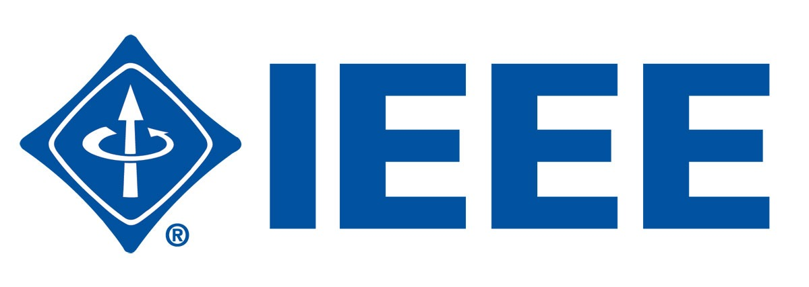
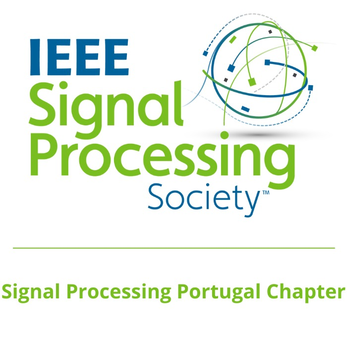
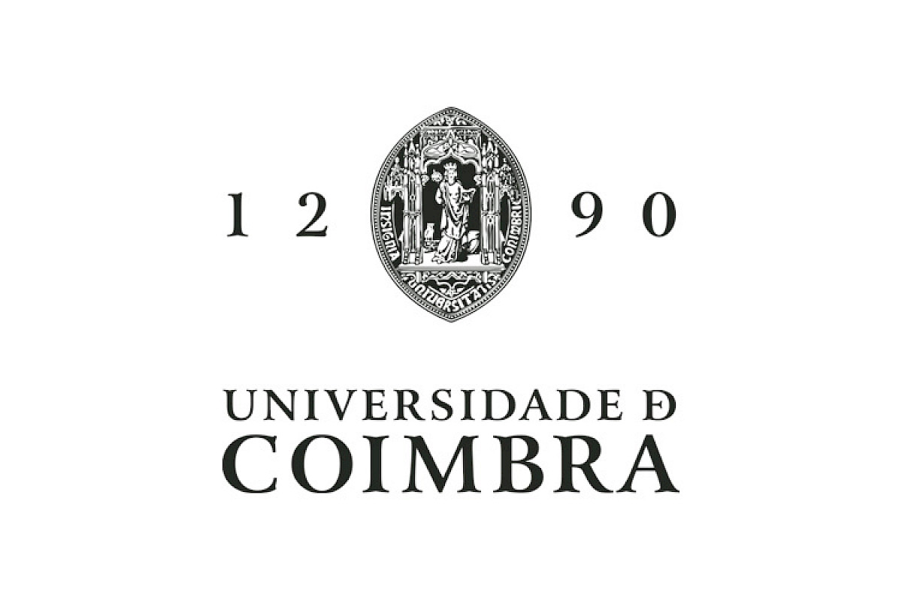
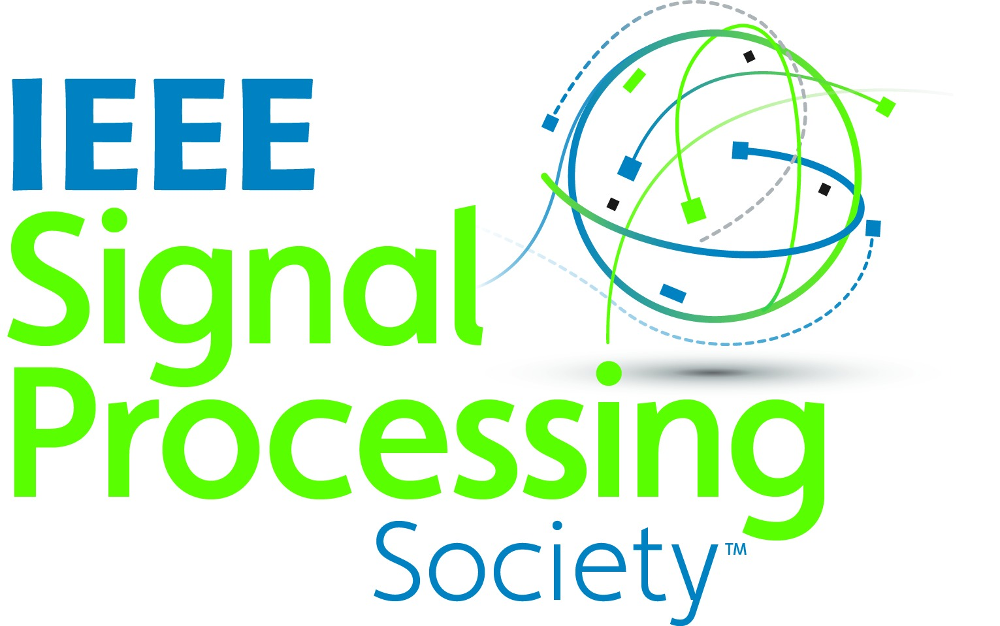
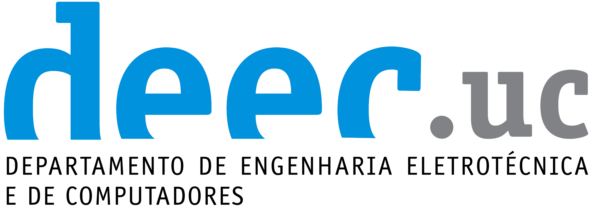

About the Initiative
Join us for the SPS Tech 2026, organised by the IEEE VTS & SPS Student Branch Chapter of the University of Coimbra and supported by the IEEE SPS Chapter Portugal. This two-day event at DEEC–FCTUC will feature talks from academia and industry on vehicular technology, 5G/6G communications, and modern signal processing. MSc and PhD students are invited to present posters and demos, share their work, and network with researchers and professionals. We look forward to welcoming you to Coimbra!
Place
The event will take place at the Department of Electrical and Computer Engineering (DEEC), University of Coimbra, Polo II.
LocationProgram and Speakers
information and a detailed program soon.
Organizers
Prof. Luís Cruz (IT-Coimbra)
lcruz@deec.uc.pt
Student Branch Chapter Universidade de Coimbra
ieee-sb@fct.uc.pt
IEEE Signal Processing Society (SPS) – Coimbra Student Branch Chapter
vtsucieee@gmail.com
Sponsors and Support




